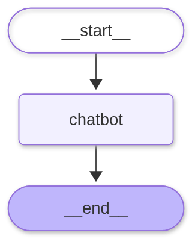
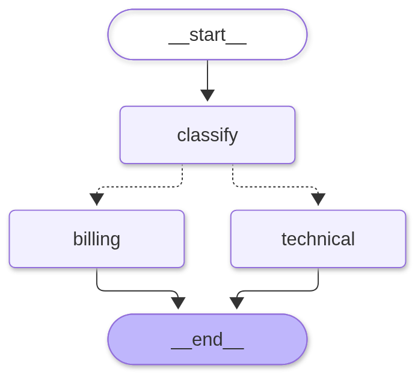

One node, then one branch
simple.py is the smallest useful LangGraph: one chatbot node, START → chatbot → END, and an add_messages reducer. main.py adds the decision: a DeepSeek classifier returns a validated billing or technical label, and a conditional edge sends the message to the matching specialist. Both scripts are live DeepSeek calls; there is no fake-model mode.
Key and run (uv)
cd assets\examples\0010-langgraph uv sync $env:DEEPSEEK_API_KEY = "sk-..." uv run python simple.py uv run python main.py "How long is the refund window on an annual plan?" uv run python main.py "Outlook sync fails with E-311" --trace uv run python main.py # interactive, keeps history uv run python main.py --mermaid # print the diagram source
Without DEEPSEEK_API_KEY, both scripts print the exact PowerShell lines and exit 1. The key comes from platform.deepseek.com/api_keys.
What simple.py prints (live DeepSeek)
question: In one sentence, what does a router do in a LangGraph? reply: A router in LangGraph directs the flow of execution by conditionally selecting which node(s) to run next based on the current state, enabling branching and dynamic control flow in the graph. state: 2 messages (human, ai) edges: __start__ -> chatbot chatbot -> __end__
What main.py prints (one route each)
route: billing answer: A full refund is available within 14 days of the initial charge. After day 14, annual plans are refunded pro rata minus the months used.
question: Outlook sync keeps failing with error E-311. What do I do? step 1 classify route=technical step 2 technical replied (123 chars) answer: Error E-311 means the mailbox storage quota was exceeded. To fix it, archive conversations or raise the seat storage limit.
--trace streams stream_mode="updates": one dict per node, so the route and the specialist that ran are both visible. The billing run never mentions E-311 and the technical run never mentions refunds, because only one branch executes.
Graph diagrams


Both were rendered from the compiled graph with draw_mermaid_png(). Dotted edges are conditional; there is no edge from a specialist back to classify, so the graph runs once per turn. Multi-turn memory is the caller's job until a checkpointer is added.
README.md
# 0010 — LangGraph: one node, then one branch
Two scripts, one idea: **a node is a function that returns a delta; an edge decides who runs next.**
- `simple.py` — the smallest useful graph: `START -> chatbot -> END`. Four nouns, no branch.
- `main.py` — a classifier reads the message, a conditional edge picks one of two specialists, and the run ends. Same four nouns, now with a decision.
The model is **DeepSeek** through `ChatDeepSeek`, and the two routes are NimbusDesk **billing** and **technical**, so the branch carries facts from lessons 7–9.
## Run
```powershell
cd assets\examples\0010-langgraph
uv sync
$env:DEEPSEEK_API_KEY = "sk-..."
uv run python simple.py
uv run python main.py "How long is the refund window on an annual plan?"
uv run python main.py "Outlook sync fails with E-311" --trace
uv run python main.py # interactive, keeps history
uv run python main.py --mermaid # print the diagram source
```
The key comes from https://platform.deepseek.com. Without it, both scripts print the exact PowerShell lines and exit 1 — they never guess.
## What you should see
`uv run python simple.py`:
```
question: In one sentence, what does a router do in a LangGraph?
reply: A router in LangGraph directs the flow of execution by conditionally selecting which node(s) to run next based on the current state, enabling branching and dynamic control flow in the graph.
state: 2 messages (human, ai)
edges:
__start__ -> chatbot
chatbot -> __end__
```
`uv run python main.py "How long is the refund window on an annual plan?"`:
```
route: billing
answer: A full refund is available within 14 days of the initial charge. After day 14, annual plans are refunded pro rata minus the months used.
```
`uv run python main.py "Outlook sync keeps failing with error E-311. What do I do?" --trace`:
```
question: Outlook sync keeps failing with error E-311. What do I do?
step 1 classify route=technical
step 2 technical replied (123 chars)
answer: Error E-311 means the mailbox storage quota was exceeded. To fix it, archive conversations or raise the seat storage limit.
```
`main.py --mermaid` prints the branch as data:
```
graph TD;
__start__ --> classify;
classify -.-> billing;
classify -.-> technical;
billing --> __end__;
technical --> __end__;
```
Dotted arrows are conditional edges. There is no line from `billing` back to `classify`: this graph runs once per turn.
Rendered as images: `output1.png` is the one-node graph, `output.png` is the branch.
## The graph, in four nouns
| declaration | in `simple.py` | in `main.py` |
|---|---|---|
| **State** | `TypedDict` with `messages` | adds `route: str \| None` |
| **reducer** | `Annotated[list, add_messages]` — nodes append | same |
| **node** | `chatbot` calls the model | `classify`, `billing`, `technical` |
| **edge** | `START -> chatbot -> END` | `START -> classify`, then a conditional edge |
| **compile** | `graph.compile()` | same |
A node never returns the new state. It returns only its change:
```python
def billing(state: State) -> dict:
reply = model.invoke([SystemMessage(content=BILLING_PROMPT), *state["messages"]])
return {"messages": [reply]} # a delta, merged by add_messages
```
`add_messages` is the reducer. Without it, `messages: list` means last-write-wins: each node replaces the list, and history collapses. Try it: the graph still runs, and the final state holds one message instead of two.
## Why there is no `router` node
A common first version has three graph nodes before the specialists: `classifier -> router -> billing/technical`. The extra `router` node writes `{"next": ...}` into state, and the conditional edge is a lambda that reads `state["next"]`.
That works, but the decision is not work. It does not call a model, read a file, or mutate anything a user would see. It is the edge function wearing a node's clothes. This lab puts it where it belongs:
```python
def pick_specialist(state: State) -> str:
return state["route"] or "technical"
graph.add_conditional_edges(
"classify",
pick_specialist,
{"billing": "billing", "technical": "technical"},
)
```
Three consequences:
1. **One fewer superstep per turn.** The classifier's delta is routed directly.
2. **No stale field.** `next` is not persisted in state, so it cannot disagree with the route a later turn computed.
3. **The contract is explicit.** The returned string must be a key in that map.
`classify` still writes `route` to state — that is *data* the run can be inspected for, not a control signal the edge has to look up.
## Break it: an edge returns a key, not a delta
Two failures worth causing once. Both were run against this graph with the conditional edge changed:
**Return a name that is not in the map** (`return "refunds"`):
```
KeyError: 'refunds'
During task with name 'classify'
```
**Return a dict from the edge function** (`return {"next": "billing"}`):
```
TypeError: unhashable type: 'dict'
```
The second one is the node/edge split-brain case: a *node* may return `{"next": ...}`, because nodes return deltas. An *edge function* must return a node name (or `END`, or a list of names). If you move the router's body into the edge without dropping the dict, LangGraph tries to hash it as a key. Reading the error tells you which of the two roles you are in.
## Multi-turn: state is not memory
`chat_loop()` keeps the returned state and feeds it into the next turn:
```python
state = app.invoke(
{**state, "messages": state["messages"] + [HumanMessage(content=text)]}
)
```
Without a checkpointer, that is the only memory there is: exit the process and the conversation is gone. A checkpointer plus a `thread_id` makes the graph read its own history back — the next step in the LangGraph arc, and the reason production agents can resume after a crash.
## Files
| file | role |
|---|---|
| `simple.py` | one node, two edges, `add_messages`; prints the compiled edges |
| `main.py` | classifier + conditional edge + two specialists; `--trace`, `--mermaid`, REPL |
| `common.py` | one `ChatDeepSeek` builder and the missing-key message |
| `output1.png` | rendered one-node graph (`START -> chatbot -> END`) |
| `output.png` | rendered branch (`classify` -> `billing` / `technical`) |
| `pyproject.toml` | uv project: `langgraph`, `langchain`, `langchain-deepseek`, `pydantic` |
## If it fails
- **`DEEPSEEK_API_KEY is not set`** — the script prints the three PowerShell lines. Copy them, then run again in the same terminal.
- **401 / 402 / timeout** — the wrapper prints the exception type and reminds you to check the key, balance, and network. The graph itself never sees the error.
- **Wrong route** — the classifier is a model call, so this is an eval problem, not a graph problem. Grow a small set of messages with expected routes and score it the way lesson 5 scores answers; the graph only obeys the label it was given.
- **`KeyError: '<name>'`** — a conditional edge returned a node name that is not a key in its map. Add the node and the map entry, or return an existing one.
- **`TypeError: unhashable type: 'dict'`** — you returned a state delta from an edge function. Return a node name; deltas belong in nodes.
simple.py
"""The smallest useful LangGraph: one node, two edges, one reducer.
A graph is four declarations:
State -- the data the nodes share (here: a message list)
Node -- a function that reads state and returns a delta
Edge -- who runs next (START -> chatbot -> END)
compile -- turn the declarations into an app you can invoke
Run from this folder:
uv sync
uv run python simple.py
uv run python simple.py --mermaid # print the diagram source
"""
from __future__ import annotations
import sys
from typing import Annotated, TypedDict
from langchain_core.messages import HumanMessage
from langgraph.graph import END, START, StateGraph
from langgraph.graph.message import add_messages
from common import build_model
QUESTION = "In one sentence, what does a router do in a LangGraph?"
class State(TypedDict):
# add_messages is the reducer: a node appends, it never replaces the list.
messages: Annotated[list, add_messages]
def build_graph(model):
def chatbot(state: State) -> dict:
# Return a delta, not the new state. The reducer merges it.
return {"messages": [model.invoke(state["messages"])]}
graph = StateGraph(State)
graph.add_node("chatbot", chatbot)
graph.add_edge(START, "chatbot")
graph.add_edge("chatbot", END)
return graph.compile()
def main() -> int:
try:
model = build_model()
except RuntimeError as error:
print(f"error: {error}", file=sys.stderr)
return 1
app = build_graph(model)
if "--mermaid" in sys.argv[1:]:
print(app.get_graph().draw_mermaid())
return 0
result = app.invoke({"messages": [HumanMessage(content=QUESTION)]})
reply = result["messages"][-1].content
print(f"question: {QUESTION}")
print(f"reply: {reply}")
print()
print(
"state: "
f"{len(result['messages'])} messages "
f"({', '.join(message.type for message in result['messages'])})"
)
print("edges:")
for edge in app.get_graph().edges:
print(f" {edge.source} -> {edge.target}")
return 0
if __name__ == "__main__":
try:
raise SystemExit(main())
except Exception as error: # noqa: BLE001 - show the provider error, keep exit 1
print(f"error: {type(error).__name__}: {error}", file=sys.stderr)
print("check DEEPSEEK_API_KEY, account balance, and network access.", file=sys.stderr)
raise SystemExit(1) from error
main.py
"""One branch: classify the message, then run the matching specialist.
The classifier is a structured-output call, so the route is a validated
Literal -- not a string match on prose. The conditional edge reads that field
and returns a node name. Everything else is the same four nouns as simple.py.
Run from this folder:
uv sync
uv run python main.py "I was charged twice for the Team plan"
uv run python main.py "Outlook sync fails with E-311" --trace
uv run python main.py # interactive
uv run python main.py --mermaid # print the diagram source
"""
from __future__ import annotations
import sys
from typing import Annotated, Literal, TypedDict
from langchain_core.messages import HumanMessage, SystemMessage
from langgraph.graph import END, START, StateGraph
from langgraph.graph.message import add_messages
from pydantic import BaseModel, Field
from common import build_model
CLASSIFY_PROMPT = """You classify NimbusDesk customer messages.
- billing: charges, invoices, refunds, plans, seats, cancellation
- technical: errors, logins, integrations, outages, how-to steps
Pick the single best route. If the message mentions both, pick the one that
blocks the customer right now."""
BILLING_PROMPT = """You are NimbusDesk's billing specialist.
Facts you may use:
- A full refund is available within 14 days of the initial charge.
- After day 14, annual plans are refunded pro rata minus the months used.
- The Team plan includes 25 seats; extra seats are billed monthly.
Answer in at most three sentences. If a fact is not in this list, say so."""
TECHNICAL_PROMPT = """You are NimbusDesk's technical specialist.
Facts you may use:
- E-311 means the mailbox storage quota was exceeded.
- Fix: archive conversations or raise the seat storage limit.
- SSO uses SAML 2.0; the metadata URL is under Settings > Security.
Answer in at most three sentences. If a fact is not in this list, say so."""
class Route(BaseModel):
"""The classifier's output schema: one of two node names."""
route: Literal["billing", "technical"] = Field(
description="billing for money questions, technical for product failures"
)
class State(TypedDict):
messages: Annotated[list, add_messages]
route: str | None
def build_graph(model):
classifier = model.with_structured_output(Route, method="function_calling")
def classify(state: State) -> dict:
decision = classifier.invoke(
[
SystemMessage(content=CLASSIFY_PROMPT),
state["messages"][-1],
]
)
return {"route": decision.route}
def pick_specialist(state: State) -> str:
# This is the conditional edge: a pure function -> a node name.
return state["route"] or "technical"
def billing(state: State) -> dict:
reply = model.invoke([SystemMessage(content=BILLING_PROMPT), *state["messages"]])
return {"messages": [reply]}
def technical(state: State) -> dict:
reply = model.invoke(
[SystemMessage(content=TECHNICAL_PROMPT), *state["messages"]]
)
return {"messages": [reply]}
graph = StateGraph(State)
graph.add_node("classify", classify)
graph.add_node("billing", billing)
graph.add_node("technical", technical)
graph.add_edge(START, "classify")
graph.add_conditional_edges(
"classify",
pick_specialist,
{"billing": "billing", "technical": "technical"},
)
graph.add_edge("billing", END)
graph.add_edge("technical", END)
return graph.compile()
def ask_once(app, question: str) -> None:
"""Stream one turn so each node's delta is visible."""
inputs = {"messages": [HumanMessage(content=question)], "route": None}
answer = ""
print(f"question: {question}")
for step, update in enumerate(app.stream(inputs, stream_mode="updates"), start=1):
for node, delta in update.items():
if node == "classify":
print(f"step {step} classify route={delta['route']}")
else:
answer = delta["messages"][-1].content
print(f"step {step} {node:<10} replied ({len(answer)} chars)")
print()
print(f"answer: {answer}")
def chat_loop(app) -> None:
"""Keep the state between turns, like a small chat session."""
state = {"messages": [], "route": None}
print("type a message, or 'exit'.")
while True:
try:
text = input("\nyou: ").strip()
except (EOFError, KeyboardInterrupt):
print()
return
if text.lower() in {"exit", "quit"}:
return
state = app.invoke(
{**state, "messages": state["messages"] + [HumanMessage(content=text)]}
)
print(f"route: {state['route']}")
print(f"bot: {state['messages'][-1].content}")
def main() -> int:
try:
model = build_model()
except RuntimeError as error:
print(f"error: {error}", file=sys.stderr)
return 1
app = build_graph(model)
args = sys.argv[1:]
if "--mermaid" in args:
print(app.get_graph().draw_mermaid())
return 0
trace = "--trace" in args
args = [arg for arg in args if arg != "--trace"]
if not args:
chat_loop(app)
elif trace:
ask_once(app, " ".join(args))
else:
state = app.invoke(
{"messages": [HumanMessage(content=" ".join(args))], "route": None}
)
print(f"route: {state['route']}")
print(f"answer: {state['messages'][-1].content}")
return 0
if __name__ == "__main__":
try:
raise SystemExit(main())
except Exception as error: # noqa: BLE001 - show the provider error, keep exit 1
print(f"error: {type(error).__name__}: {error}", file=sys.stderr)
print("check DEEPSEEK_API_KEY, account balance, and network access.", file=sys.stderr)
raise SystemExit(1) from error
common.py
"""Shared model wiring for the two scripts in this lab.
Both scripts talk to the live DeepSeek API. Set DEEPSEEK_API_KEY first:
PowerShell (this session): $env:DEEPSEEK_API_KEY = "sk-..."
PowerShell (persist): setx DEEPSEEK_API_KEY "sk-..." # reopen the terminal
Get a key at https://platform.deepseek.com/api_keys. No key -> the scripts print
these instructions and exit 1, never a guess.
"""
from __future__ import annotations
import os
from langchain_deepseek import ChatDeepSeek
MODEL = os.getenv("DEEPSEEK_MODEL", "deepseek-flash")
BASE_URL = os.getenv("DEEPSEEK_BASE_URL", "https://api.deepseek.com")
def missing_key_message() -> str:
return (
"DEEPSEEK_API_KEY is not set.\n"
' PowerShell (this session): $env:DEEPSEEK_API_KEY = "sk-..."\n'
' PowerShell (persist): setx DEEPSEEK_API_KEY "sk-..." # reopen terminal\n'
" Get a key: https://platform.deepseek.com/api_keys"
)
def build_model() -> ChatDeepSeek:
"""Return a live ChatDeepSeek handle, or explain exactly what is missing."""
key = os.getenv("DEEPSEEK_API_KEY")
if not key:
raise RuntimeError(missing_key_message())
return ChatDeepSeek(
model=MODEL,
api_key=key,
api_base=BASE_URL,
temperature=0,
max_retries=2,
timeout=60,
# This lab is about graph wiring, not reasoning traces: keep calls short.
# Delete this line to watch the model think before it answers.
extra_body={"thinking": {"type": "disabled"}},
)
Files
| file | role |
|---|---|
simple.py | one node, two edges, add_messages; prints the compiled edges |
main.py | classifier + conditional edge + two specialists; --trace, --mermaid, REPL |
common.py | one ChatDeepSeek builder and the missing-key message |
output1.png | rendered one-node graph (START -> chatbot -> END) |
output.png | rendered branch (classify -> billing / technical) |
pyproject.toml | uv project: langgraph, langchain, langchain-deepseek, pydantic |